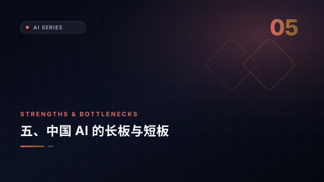

五、中国 AI 的长板与短板：为什么落地快、原创少
落地快与原创少是中国 AI 的一体两面。从场景供给、算力口径、芯片生态到人才结构，客观拆解长板与短板。

我在这台电脑上本地跑的模型，是 Qwen 的蒸馏版——模型蒸馏，就是把大模型的知识压缩进一个小模型，好让它塞进消费级显卡。往上翻它的家族树，底座是杭州的团队开源的；再往上翻一层，支撑整个体系的那篇注意力机制论文，2017 年出自 Google。中国 AI 最有意思的地方就藏在这两层之间：应用和工程长得飞快，地基大半是别人打的。
网上聊这个话题，长期在两个极端之间横跳：一边喊遥遥领先，一边喊全面被卡脖子。我的判断是，两种说法都是拿局部当全部。中国 AI 的真实画像是落地快、原创少，而且这不是两个独立的事实，是同一个结构的一体两面。这篇把长板和短板各拆开看，再说说这个结构对普通人意味着什么。
长板先说透：制度供给加场景密度
中国 AI 的第一长板不是某项具体技术，而是制度供给和场景密度的叠加。
先看制度。2025 年 8 月，国务院印发《关于深入实施「人工智能+」行动的意见》，把 AI 当成「互联网+」那样的通用目的技术来部署：像当年互联网进每个行业一样，让 AI 进每个行业，定下到 2027 年智能终端、智能体等应用普及率超 70% 的目标。总文件之下，工信部的人工智能+制造、交通运输等专项方案陆续出台，地方方案再接一层，形成总文件、部委专项、地方方案的三层结构。这种自上而下、连续递进的规划形态，在美国找不到对应物。
再看场景够不够。衡量实体经济的智能化程度，有个相对硬的第三方标准：世界经济论坛评选的灯塔工厂，专挑把数字化和 AI 真正用进生产环节的企业。截至 2025 年 9 月，全球共 201 家，中国占 85 家，四成多，全球第一；比如三一重工的桩机工厂，是全球重工行业里的第一家。落到具体系统上更直观：第三篇提过国家电网 2024 年 12 月发布的光明电力大模型，管电网安全运行、新能源消纳、设备运检，也讲过电力行业最看重数据不出机房——这种需求在别的国家是偶发订单，在中国是一个覆盖 11 亿人口电网的常态化工程。
交通行业给的是成套的新样本。2026 年 6 月，交通运输部等五部门印发「人工智能+交通运输」行动方案，梳理出 860 项率先突破场景、发布首批 41 个重点场景；两个月后的专题发布会通报：高铁沿线接入 5.6 万路摄像机，截至 2026 年 4 月累计处置近 31 万条有效报警，京雄高速异常事件识别准确率超 95%，全国无人快递车超 1.6 万台。机制比数字更有信息量：应用推广类场景由场景所有方牵头、攻关突破类才由 AI 企业牵头——需求在产线上，主管部门的文件把这个分工写明白了。城市轨道交通也有了行业首个大模型：青岛地铁 2025 年 4 月发布青铁 1.0，6 号线上线供电、车辆、机电、智慧车站四个智能体试运行；科技日报口径称体系全域覆盖后预计运营效率提升超 40%、生产作业流程缩减超 60%——注意是「预计」，目标值与已上线试运行是两回事。油气管道同样在引入 AI：国家能源局 2026 年 6 月的工作会议原话是「积极推广人工智能新技术，具备条件的地区拓展无人机巡线等管道巡查新模式」——分寸留在「具备条件的地区」，不是全面替代。
产业底座也有官方口径可查。工信部披露，截至 2024 年 9 月底，我国人工智能核心产业规模接近 6000 亿元，相关企业超 4500 家；网信办的备案名单显示，截至 2026 年 8 月底累计 1112 款生成式 AI 服务完成备案，比 2025 年底公告口径的 748 款，八个月净增约 364 款，供给端还在放量。备案之外还有一道「登记」：同期累计 731 款，指调用已备案模型能力开发的应用，和备案模型数是两个口径，引用时不能混。备案制这件事值得多说一句：规模之外还有秩序，监管还要求上线应用在显著位置公示所用模型与备案号，普通人打开应用就能自查——这套治理框架比很多还在争论要不要管的国家走得靠前。
当然，政策密度高不等于资源都用在刀刃上，算力基建里就有重复建设的影子，放到下一节说。
算力的账要分口径算，开源是真反转
讲算力优势之前，先学会分口径，不然数字就是任人打扮的。
空间布局上，中国 2022 年启动东数西算工程：8 大国家算力枢纽节点、10 个数据中心集群。逻辑很朴素——东部 AI 产业密集但能耗指标紧张，西部风电光伏富余、气候冷凉利于散热，于是训练任务向西送，绿电算力向东供。硬约束跟着工程走：枢纽实施方案要求东部枢纽数据中心的 PUE 压到 1.25 以下、西部 1.2 以下（PUE 是数据中心的能效指标，越接近 1 越省电）；2023 年底四部门的算力网实施意见又补了一笔能源账——到 2025 年底，国家枢纽节点新建数据中心的绿电占比要超 80%。
总量上，中国信通院蓝皮书的口径是：截至 2025 年 6 月，算力总规模 962 EFLOPS，位居全球第二，全球占比约 21%（EFLOPS 是每秒百亿亿次浮点运算的计量单位），这是 FP32 单精度口径，同期智能算力约 788 EFLOPS，用的是 FP16 半精度口径（单精度 FP32 与半精度 FP16 指计算时保留的数值位数不同；AI 常用位数减半的 FP16，同一张卡按半精度标出的数字往往比单精度高出数倍）。另按工信部口径，截至 2026 年 6 月底，智能算力规模达 2185 EFLOPS，同比增长 177%。两件事必须分开说：两个数字来自两家机构、两个年份、两种精度，混着比没有意义——媒体混用口径，就能造出「算力一年暴涨」的错觉。这是我学 AI 这一年最实用的教训之一：引任何算力数字，先问口径和时间点。
这套功课马上又用上了。工信部 2026 年 9 月印发《信息通信行业发展「十五五」规划》，提出到 2030 年智能算力规模达到 9800 EFLOPS、信息基础设施累计投资 3.8 万亿元。注意这是规划目标值、智能算力口径，与前文的总算力及 2026 年中实测值对照，相当于五年翻两番出头，塔基的厚度被写成了五年期、可对账的国家目标——兑现到哪一步，到时候还是看公告。
总量第二不等于结构成熟。 行业里的普遍反馈是紧缺与闲置并存：高端训练算力一柜难求，部分中西部新建集群上架率明显偏低；时延敏感、交互频繁的业务，本来也留不到西边。一些地方智算中心是政策驱动立项，而不是需求驱动，这类错配是真金白银的浪费。
模型层反而有一个干净利落的反转：开源。据 Hugging Face 社区统计，到 2024 年 9 月底，Qwen 的衍生模型数量达到 7.43 万个，首次超过 Llama 系列的 7.28 万；到 2025 年 4 月 Qwen3 发布时，阿里公布开源模型已超 200 款，全球下载量超 3 亿次。DeepSeek 更不用说，2025 年 1 月 20 日开源 R1，用低成本推理引发全球实验室的复现潮。顺手点破一个第二篇算训练账时点过的误读：DeepSeek-V3 论文自述的 557.6 万美元训练成本，只是预训练阶段的 GPU 租用费用，不含前期研究和全量训练开销——把它读成「550 万美元造出 GPT-4 级模型」，等于把账单的一页当成了全部账本。
但开源话语权要分层看。中国在模型权重这一层确实实现了历史性反转，框架和平台那一层没有：PyTorch、TensorFlow 仍是训练主流，vLLM 这类推理框架由美国社区发起，Hugging Face 本身是美国公司的平台。衍生模型多也不等于原创基座多——到 2026 年社区积累的几十万个衍生模型，绝大多数是微调和蒸馏，真正的原创基座数量仍然有限。
卡脖子不是一个点，是三层
先进芯片的差距要分硬件、系统、生态三层看，三层的痛感完全不同。
硬件层最痛。时间线捋一遍：2022 年 10 月首轮出口管制就直接禁掉了 A100、H100，英伟达为中国市场特制的降配版 A800、H800，又在 2023 年 10 月的升级中被封堵；EUV 光刻机——制造最先进制程芯片绕不开的设备——更是长期禁售；2025 年 4 月，连专供中国的 H20 都被要求许可证、实质禁售，英伟达为此计提约 55 亿美元库存损失，3 个月后美方又批准恢复 H20 销售。管制政策的反复本身就是信息：它既是技术问题，也是谈判筹码。根子在 EUV：2023 年华为 Mate 60 Pro 搭载中芯国际 7nm 级工艺的芯片上市，公开验证了没有 EUV 也能量产先进制程，但 5nm 及以下仍然困难，追赶靠堆叠和封装绕行，能效和成本都要付代价。
系统层在追，追法也清楚：单颗芯片性能弱一截，就用高速互联把大量国产芯片攒成大规模集群，以规模换性能——万卡集群的互联工程，国内已经验证过可行性。代价同样明白：整机功耗、建设成本、集群调度复杂度都往上抬，而且显存容量、互联带宽这些环节，与英伟达的全栈方案仍有实打实的差距。
生态层最难，也最少被提起。英伟达 CUDA 软件栈积攒了数百万量级的开发者，迁移成本极高；昇腾的 CANN、MindSpore 在补课，需要时间。前文说的框架与平台短板，本质上和芯片生态是同一个故事：单点可以追赶，系统级迁移最慢。
市场上有现成的观察窗口。黄仁勋 2025 年 5 月说，英伟达在中国 AI 芯片市场的份额已从管制前的 95% 降到 50%；同年 10 月又说，高端芯片市场份额从 95% 降到了 0%。这两个数字说的不是一回事：前者指整个中国 AI 芯片市场，后者只指高端市场，挑哪一个单独引用，结论都会失真。两个数字放在一起，断供确实痛，也确实把英伟达让出的市场推给了昇腾们。八个字概括：痛而未垮，追而未平——国产替代走的是能用、够用的路线，离好用还有距离。
原创少，得把这件事说准确
塔基厚、塔尖缺，是中国 AI 在人才和数据两个维度上共用的结构。
先承认事实：Transformer、GPT 范式、RLHF、扩散模型，这些奠基性原创都出自美国机构，中国的强项在工程与开源层。这个差距不是靠短期投入能填平的——基础研究的回报周期以十年计，急不来。
人才数据把这个结构量化了。保尔森基金会 MacroPolo 的全球 AI 人才追踪报告 2.0 版（2022 年数据）显示：全球顶尖 AI 研究者中 47% 本科毕业于中国，全球第一；但美国至今仍是这批人才最大的用人地，中国培养的人相当一部分最终去了海外。到了 3.0 版（2024 年数据），本科在中国的占比是 38%，版本间差异来自方法调整，引用时得注明版本。至于网传「七成顶尖人才留美」的说法，各方转述口径不一且缺乏单一权威出处，不宜直接采信。培养地是全球最大，用人地不在这里——塔基和塔尖的关系，一份数据说完。
数据维度同构。中文公开语料的弱是结构性的：大模型预训练的主要公开语料源 Common Crawl 里，中文内容占比业界估算约 5%，远低于英文；深层原因是高质量中文内容大量沉淀在微信、抖音、知乎这类封闭 App 里，爬虫看不见，版权收紧又进一步压缩了可爬空间。但另一面，电网、轨道交通、制造这些场景积累了全球密度最高的行业运行数据，数据要素制度——数据被确立为第五大生产要素、组建国家数据局——正在把这份家底变成可供给的训练资源。所以准确的说法不是「中国没数据」，而是消费互联网语料弱、行业数据强、制度正在打通供给。 司法也在同步划线：2024 年初广州互联网法院对生成式 AI 侵犯著作权作出全球首批之一的判决，AI 生成内容能不能用、怎么用，从此有了判例可依。
工程再创造本身就是竞争力。 DeepSeek 大幅压缩显存占用的新型注意力机制（MLA）、把训练成本压到极低的工程方案，Qwen 成体系的蒸馏开源，都属于工程级创新——把前沿技术做便宜、做开源、做进产业，和提出前沿技术同样是贡献。两个极端都要拒绝：「原创不足所以中国 AI 不行」是错的，「工程强所以原创短板不重要」同样是错的。短板是塔尖高度问题，不是能不能用的问题。
模型水平也在给这个判断提供证据。斯坦福 HAI 的 AI Index Report 2025 测算，中美顶级模型的基准差距一年内急剧收窄：多项基准的平均差距从约 9.3% 缩到 1.7%，单项如 MMLU 更是从 17.5 个百分点缩到 0.3 个百分点，接近持平；但 Epoch AI 给出另一口径——中国模型的发布平均落后美国前沿约 7 个月。把两份报告放在一起看，图景才完整：跑分接近了，首发时间还差着几个月。
四种流行说法，各错在哪
- 「遥遥领先，全面碾压」。错在把总量优势说成全面领先。算力全球第二是总量口径，结构上紧缺与闲置并存；灯塔工厂占四成说明制造落地密度，不等于芯片与框架自主。优势讲到头，也只到塔基。
- 「原创少，所以中国 AI 不行」。错在用单一指标下结论。基准差距已收窄到一两个百分点，工程再创造本身就是生态影响力；但「差距已经不存在」同样不成立，前沿首发平均还差着几个月。承认短板和承认进展不冲突。
- 「场景多，赢定了」。错在把入场券当奖杯。麦肯锡 State of AI 2025 报告里，全球 88% 的组织至少在一个职能用上了 AI，但仅有 39% 的受访企业表示 AI 对公司整体息税前利润（EBIT）产生了可衡量的贡献，真正靠重构流程获利的高绩效企业约 6%。中国的行业项目制交付重、定制化多、复购差是公认痛点——用得广和用得深之间，隔着规模化这道坎。
- 「路线不同，必有一高」。海外冲通用大模型，OpenAI、软银、Oracle 在 2025 年 1 月宣布的星际之门计划拟 4 年投入 5000 亿美元建数据中心；国内打价格战，2024 年 5 月字节把主力模型定到每千 Token 0.0008 元，阿里输入价直降 97%，百度、腾讯的部分模型直接免费。这是资源禀赋和市场结构的选择，不是优劣：美国付资本消耗的代价，中国付毛利压薄、交付偏重的代价。两条路线都没有掉队，也不必强行分出高下。
我的判断
写到这里，可以回到开头那台跑着 Qwen 蒸馏版的电脑了。中国 AI 的长板长在塔基——场景、工程、人才厚度；短板卡在塔尖——原创理论、先进制程、高质量数据供给。 评价它，两句话都不能省：用塔尖的短板否定塔基的厚度，是唱衰；用塔基的厚度吹成塔尖的领先，是吹捧。
对我这样的学习者，这个结构里藏着更实际的推论：塔基厚，意味着最缺的人不在塔尖。国内真正稀缺的不是算法天才，而是懂行业、又会用 AI 工具的落地工程师——电网的运检老师傅，比大模型博士更清楚巡检数据的毛病在哪。这个结构落到具体的人身上，就是下一篇的话题：AI 到底会抢走谁的饭碗，以及为什么我的答案不是转行做算法。